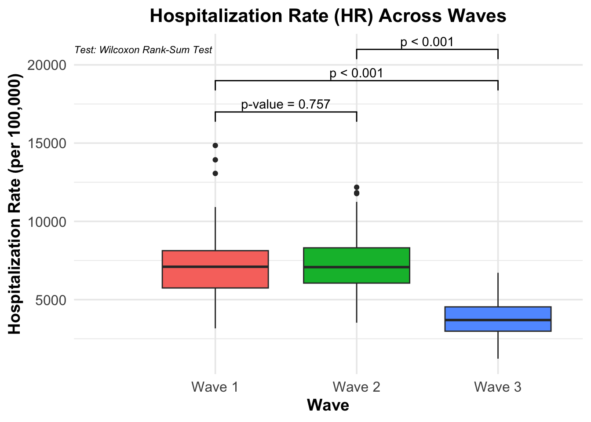

The COVID-19 pandemic, first reported in Wuhan in late 2019, is a respiratory disease caused by the severe acute respiratory syndrome coronavirus 2 (SARS-Cov-2) (Shi et al. 2020; Covid and Team 2021). The SAR-Cov-2 virus rapidly spread from China to the rest of the world in early 2020, and has constituted arguably the most severe global health crisis the 21st century has seen so far. Beyond its direct impact on human health, the outbreak of COVID-19 has exerted indelible influence on societies, economies, and the healthcare systems. In the early phase of the COVID-19 pandemic, it was known to cause irreversible pneumonia, high fever, and dry cough (Madabhavi, Sarkar, and Kadakol 2020). Silvestri et al. (2020) identified four stages of the early variants of the SARS-Cov-2 virus: upper respiratory infection, pneumonia, cytokine storm, and in the worse scenario, death (Stasi et al. 2020).
The rapid transmission of the COVID-19 virus was possibly due to its unique characteristic: asymptomatic transmission. Compared with coronaviruses identified previously such as the MERS-Cov, many of the COVID-19 infected patients did not show any symptoms when they first contracted the virus. However, they already became carriers, and the virus already started spreading from them through air, body fluid exchange, or aerosols (Gao et al. 2021). The asymptomatic transmission feature accelerated the wide spread of the COVID-19 virus, and at the same time hindered the containment efforts led by the healthcare agencies. What’s more, as the pandemic progressed and vaccines were developed, the SARS-Cov-2 virus exhibited a high rate of escape and mutation, leading to a variety of variants including alpha, beta, delta, and omicron. These variants showed differences in their transmissibility, virulence, and the ability to evade the immune system. Because of this, even vaccines, which used to be taken as the ultimate measure to end any pandemic, proved to fall short of people’s expectation in controlling this worldwise crisis (Vasireddy et al. 2021). As a result, the majority of the governments announced emergency measures ranging from mask mandates, social distancing, regular sterilization, and even full lock-down of cities (Koh 2020).
Globally, what the COVID-19 imposed was not merely a challenge in the field of public health, but also a multi-faceted catastrophe. For instance, restrictions on freight transport wreaked great havoc on international transactions and businesses. Consequently, the economic systems of countries around the globe were heavily struck, especially for those which rely greatly on exports. A cascade of its adverse effects was reflected by high rate of unemployment, corporation bankruptcy, disruptions to supply chains, and a switch in working/learning mode. To the healthcare system, COVID-19 meant extraordinary pressure on the infrastructures. Hospitals were often confronted with an overwhelming number of infected patients, while experiencing a lack of medical professionals also due to COVID-19 transmission.
Especially in the United States, the COVID-19 pandemic has been complicated and exacerbated by various factors (Omer, Malani, and Del Rio 2020; Covid and Team 2021). Given the high degree of autonomy of each state in the US, significant variations could be seen across states due to discrepancies in regional public health policies, demographics, and economic development. Previous studies have suggested that the ethnic minorities, middle- and low-income populations, and the rural communities were relatively more vulnerable to this emergency. These populations often suffer from pre-existing health inequities and consequently disproportional rates of mortality were reported (Alcendor 2020; Wilder 2021).
The US Centers for Disease Control and Prevention (CDC) provides an excellent platform for collecting and sharing COVID-19 related data. These data enable us to study the progression and impact of COVID-19 throughout the pandemic period. We can expect that different states might have responded differently: adopting distinct strategies for containment and mitigation. Additionally, as the COVID-19 virus mutated, multiple waves could be identified, which were driven by seasonal changes, vaccine effectiveness, and the fatality rate. Understanding these patterns is vital to assessing the evolution of the SARS-Cov-2 virus, regional differences, and the virulence over time.
In this project, we examined the COVID-19 data provided by the CDC COVID-19 Response, including COVID-19 cases, COVID-related deaths, and hospitalization from Jan 25th, 2020 to Nov 30th, 2024. Leveraging data analysis and visualization, this study aims to identify major waves of the COVID-19 pandemic in the US, and answer the following questions 1) which states generally responded to the pandemic better, 2) how the virulence of the SARS-Cov-2 virus evolved to understand the regional differences and seasonal changes in the transmissibility of the virus. In addition, we also seek to estimate the weekly excess mortality for each state during the pandemic period, and investigate whether the regional differences could be observed and whether COVID-19 was the driving factor. We hypothesize that states along the west and east coasts would generally have better performance during the pandemic due to stronger healthcare infrastructure. We also hypothesize that the COVID-19 virus became less virulent over time as typically viruses do not possess high virulence and high contagiousness.
Analyses
Pandemic period from Jan 2020 to Nov 2024
The figure below displays the COVID-19 cases, deaths, and hospitalization rate per 100,000 people in each region of the US from 2020 to 2024.
Warning: Removed 1612 rows containing missing values or values outside the scale range
(`geom_line()`).
As can be seen from the trend plot which depicts the rates of COVID-19 cases, deaths, and hospitalizations from 01/25/2021 to 11/30/2024, there seems to be 3 waves of COVID-19 spread. The first one occurs from Oct 2020 to Apr 2021, where a peak in cases, deaths, and hospitalizations can be observed. Likewise, it appears that there was another wave between Jul 2021 to early Dec 2021. Lastly, there was a wave from early Dec 2021 to Apr 2022.
Deaths rate by state during each time period
wave1dat <- dat %>%filter(date >=make_date(2020, 10, 1), date <=make_date(2021, 4, 1)) %>%group_by(state) %>%summarise(cum_death =sum(deaths, na.rm =TRUE),population =mean(population, na.rm =TRUE),death_rate = cum_death *100000/ population ) %>%ungroup()wave2dat <- dat %>%filter(date >=make_date(2021, 7, 1), date <=make_date(2021, 12, 1)) %>%group_by(state) %>%summarise(cum_death =sum(deaths, na.rm =TRUE),population =mean(population, na.rm =TRUE),death_rate = cum_death *100000/ population ) %>%ungroup()wave3dat <- dat %>%filter(date >=make_date(2021, 12, 2), date <=make_date(2022, 4, 1)) %>%group_by(state) %>%summarise(cum_death =sum(deaths, na.rm =TRUE),population =mean(population, na.rm =TRUE),death_rate = cum_death *100000/ population ) %>%ungroup()# write_csv(wave1dat,file = "../output/wave1dat.csv")# write_csv(wave2dat,file = "../output/wave2dat.csv")# write_csv(wave3dat,file = "../output/wave3dat.csv")
From Oct 1st 2020 to Apr 1st 2021, overall this wave was arguably the most severe wave among all 3. The highest death rate per 100,000 people was reported in South Dakota (SD), with an average of 188.91 deaths among 100,000 people. Following South Dakota were North Dakota (177.97), Oklahoma (175.32), and Arkansas (150.17). There were also states which managed to contain the death rate below 50 per 100,000. For example, the lowest death rate was reported in Hawaii, which was only 9.12 deaths on average per 100,000 people, followed by Vermont (11.18), Alaska (26.48), Washington (39.58), Oregon (42.04), Puerto Rico (43.66), and Maine (47.19).
From July 1st 2021 to Dec 1st 2021, the COVID-19 variant seemed to be less virulent. The highest death rate per 100,000 people was reported in West Virginia (WV), with an average of 113.13 deaths among 100,000 people. Following West Virginia were Florida (111.62), Montana (111.30), and Wyoming (109.88). There were also states which managed to contain the death rate below 40 per 100,000. For example, the lowest death rate was reported in Washington D.C., which was only 12.09 deaths on average per 100,000 people, followed by Vermont (12.39), Connecticut (12.39), New York (17.04), and Hawaii (36.83).
For the third wave, the COVID-19 variant during the period seemed to grow more infectious and deadly. The highest death rate per 100,000 people was reported in West Virginia (WV) again, with an average of 103.73 deaths among 100,000 people. Following West Virginia were Ohio (102.05), New Mexico (96.78), and Kentucky (93.82). There were also states which managed to contain the death rate below 40 per 100,000. For example, the lowest death rate was reported in Hawaii, which was only 20.76 deaths on average per 100,000 people, followed by Alaska (27.69), Puerto Rico (28.21), Vermont (29.85), and Utah (33.22). Figures can be found in Supplementary Methods.
wave1dat$wave <-"Wave 1"wave2dat$wave <-"Wave 2"wave3dat$wave <-"Wave 3"allWaves <-rbind(wave1dat, wave2dat, wave3dat)allWaves %>%group_by(state) %>%summarise(avg_death_rate =mean(death_rate, na.rm = T)) %>%ungroup() %>%ggplot(aes(x =reorder(state, avg_death_rate), y = avg_death_rate, fill = avg_death_rate)) +# Add `fill` aestheticgeom_col() +scale_fill_gradient2(low ="#FFE5B4", mid ="#FFA500", high ="#800000") +# Define gradient colorscoord_flip() +theme_minimal(base_size =14) +# Minimal theme for better readabilitytheme(axis.title.y =element_blank(), # Remove y-axis title for a cleaner lookaxis.title.x =element_text(face ="bold"), # Bold x-axis titleaxis.text =element_text(size =6), # Slightly larger axis textlegend.title =element_text(face ="bold"), # Bold legend titlepanel.grid.minor =element_blank(),legend.position ="right"# Position legend to the right ) +labs(y ="Average Death Rate (per 100,000)",fill ="Average Death Rate",title ="Average COVID-19 Death Rates by State across 3 Waves",subtitle ="Data from Oct 1st 2020 to Apr 1st 2022" )
We also compared the performance of each state across all 3 waves by taking the average of their death rate per 100,000 people. Results show that Oklahoma had the highest average death rate per 100,000, amounting to 120.00 deaths per 100,000 people, followed by West Virginia (115.33), Mississippi (109), Kentucky (107.42), Tennessee (106.92). There were also states which kept a relatively low death rate across waves. Namely, Vermont had an average death rate of only 17.81 per 100,000. Similarly, Hawaii had an average of 22.24 per 100,000, followed by Puerto Rico (30.94) New York (37.10), and Washington (40.07).
Generally, it can be seen that states in the northeastern part or the west coast of the US performed better than those in the middle or west US. It can also be observed that less populated states such as Vermont and Washington had lower death rates. But exceptions are also evident, for New York is rather populated but it was among the states with the lowest average death rates.
COVID-19 became less or more virulent across different periods
To evaluate if COVID-19 became less or more virulent across different time periods, we will employ three key metrics: cases fatality rate (CFR), hospitalization rate (HR), and death per population (DP). The CFR is defined as deaths per case, HR is defined as hospitalizations per case, and DP is defined as deaths per population. In the following analyses, we will analyze these key metrics with figures and visualizations.
Pair-wise comparison of the key metrics
pooled.dat <- dat %>%mutate(Wave =case_when( date >=make_date(2020, 10, 1) & date <=make_date(2021, 4, 1) ~"Wave 1", date >=make_date(2021, 7, 1) & date <=make_date(2021, 12, 1) ~"Wave 2", date >=make_date(2021, 12, 2) & date <=make_date(2022, 4, 1) ~"Wave 3",.default =NA )) %>%filter(!is.na(Wave)) %>%group_by(Wave, state) %>%summarise("Total Cases"=sum(cases, na.rm = T),"Total Deaths"=sum(deaths, na.rm = T),"Total Hospitalization"=sum(hosp, na.rm = T),"Total Population"=mean(population, na.rm = T), .groups ="drop") %>%ungroup()metric.dat <- pooled.dat %>%mutate(CFR =`Total Deaths`*100000/`Total Cases`,HR =`Total Hospitalization`*100000/`Total Cases`,DP =`Total Deaths`*100000/`Total Population`)metric.dat %>%ggplot(aes(x = Wave, y = CFR, fill = Wave)) +geom_boxplot() +geom_signif(comparisons =list(c("Wave 1", "Wave 2"),c("Wave 1", "Wave 3"),c("Wave 2", "Wave 3") ),y_position =c(2500, 2700, 3000), # Adjust for clear separationtest = wilcox.test,map_signif_level =function(p) {if (p >=0.001) {sprintf("p-value = %.3f", p) } else {"p < 0.001" } } ) +theme_minimal(base_size =14) +# Slightly increase the base font sizetheme(legend.position ="none",axis.title =element_text(size =14, face ="bold"),axis.text =element_text(size =12),plot.title =element_text(size =16, face ="bold", hjust =0.5)# plot.margin = margin(t = 10, r = 10, b = 10, l = 10) ) +labs(title ="Case Fatality Rate (CFR) Across Waves",x ="Wave",y ="Case Fatality Rate (per 100,000)" ) +annotate("text",x =0, y =3200, # Adjust position based on your data rangelabel ="Test: Wilcoxon Rank-Sum Test",hjust =0, size =3, color ="black", fontface ="italic" )
metric.dat %>%ggplot(aes(x = Wave, y = HR, fill = Wave)) +geom_boxplot() +geom_signif(comparisons =list(c("Wave 1", "Wave 2"),c("Wave 1", "Wave 3"),c("Wave 2", "Wave 3") ),y_position =c(16000, 18000, 20000), # Adjust for clear separationtest = wilcox.test,map_signif_level =function(p) {if (p >=0.001) {sprintf("p-value = %.3f", p) } else {"p < 0.001" } } ) +theme_minimal(base_size =14) +# Slightly increase the base font sizetheme(legend.position ="none",axis.title =element_text(size =14, face ="bold"),axis.text =element_text(size =12),plot.title =element_text(size =16, face ="bold", hjust =0.5)# plot.margin = margin(t = 10, r = 10, b = 10, l = 10) ) +labs(title ="Hospitalization Rate (HR) Across Waves",x ="Wave",y ="Hospitalization Rate (per 100,000)" ) +annotate("text",x =0, y =21000, # Adjust position based on your data rangelabel ="Test: Wilcoxon Rank-Sum Test",hjust =0, size =3, color ="black", fontface ="italic" )

metric.dat %>%ggplot(aes(x = Wave, y = DP, fill = Wave)) +geom_boxplot() +geom_signif(comparisons =list(c("Wave 1", "Wave 2"),c("Wave 1", "Wave 3"),c("Wave 2", "Wave 3") ),y_position =c(200, 220, 240), # Adjust for clear separationtest = wilcox.test,map_signif_level =function(p) {if (p >=0.001) {sprintf("p-value = %.3f", p) } else {"p < 0.001" } } ) +theme_minimal(base_size =14) +# Slightly increase the base font sizetheme(legend.position ="none",axis.title =element_text(size =14, face ="bold"),axis.text =element_text(size =12),plot.title =element_text(size =16, face ="bold", hjust =0.5)# plot.margin = margin(t = 10, r = 10, b = 10, l = 10) ) +labs(title ="Death per Population (DP) Across Waves",x ="Wave",y ="Death per Population (per 100,000)" ) +annotate("text",x =0, y =250, # Adjust position based on your data rangelabel ="Test: Wilcoxon Rank-Sum Test",hjust =0, size =3, color ="black", fontface ="italic" )
To evaluate virulence, we calculate Case Fatality Rate (CFR) across waves. CFR is calculated as \(CFR = \frac{Cumulative Deaths}{Cumulative Cases} \cdot 100\). We can clearly see from the plot that COVID-19 became less virulent across the three waves, as evidenced by the declining CFR from Wave 1 to Wave 3. While the initial wave saw a relatively high median CFR around 1.5%, this dropped progressively in subsequent waves, reaching below 1% by Wave 3. The reduction in fatality rates is likely due to increased vaccination coverage, improved medical responses, and healthcare system adaptations.
Q4: Estimate excess mortality for each week for each state. Check if excess mortality can be explained by COVID-19
library(tidyr)library(purrr)library(broom)library(ggplot2)dat <- dat %>%rename(covid_deaths = deaths) # renaming for clarity############################### 1. Prepare historical data (2015-2019)############################### Filter historical periodhistorical_data <- deaths %>%filter(mmwr_year >=2015& mmwr_year <=2019) ############################### 2. Fit Linear Models to Estimate Baseline############################### We'll fit a simple linear model per state predicting all_cause_deaths# from mmwr_year and mmwr_week. You could add more complex seasonality terms,# such as using sin/cos of week or factorized weeks, but here's a simple approach.models <- historical_data %>%group_by(state_name) %>%do(model =lm(all_cause_deaths ~ mmwr_year + mmwr_week, data = .) )############################### 3. Predicting Expected Deaths for 2020–2024############################### Filter data for prediction period (2020+)future_data <- deaths %>%filter(mmwr_year >=2020)# Generate predictions by applying each state's model to its future_datafuture_predictions <- future_data %>%group_by(state_name) %>%nest() %>%left_join(models, by ="state_name") %>%mutate(predictions =map2(data, model, ~augment(.y, newdata = .x))) %>%unnest(predictions) %>%ungroup()# Now `future_predictions` contains:# - all original columns from `future_data`# - .fitted: predicted (expected) deaths# - .se.fit, .resid, etc., if needed############################### 4. Calculate Excess Mortality##############################future_predictions <- future_predictions %>%mutate(excess_deaths = all_cause_deaths - .fitted)############################### 5. Merge With COVID-19 Deaths############################### Ensure `dat` also has mmwr_year, mmwr_week, and state_name for the same weeksanalysis_data <- future_predictions %>%left_join(dat %>%select(state_name, mmwr_year, mmwr_week, covid_deaths),by =c("state_name", "mmwr_year", "mmwr_week"))# Now `analysis_data` has: all_cause_deaths, expected deaths (.fitted), excess_deaths, and covid_deaths############################### 6. Visualizations##############################analysis_data <- analysis_data %>%filter(!state_name %in%c("New York City", "United States")) %>%# Approximate a date from mmwr_year and mmwr_week:mutate(approx_date =as.Date(paste(mmwr_year, mmwr_week, 1, sep="-"), "%Y-%U-%u"))
Warning: There were 52 warnings in `mutate()`.
The first warning was:
ℹ In argument: `approx_date = as.Date(paste(mmwr_year, mmwr_week, 1, sep =
"-"), "%Y-%U-%u")`.
Caused by warning in `strptime()`:
! (0-based) yday 367 in year 2021 is invalid
ℹ Run `dplyr::last_dplyr_warnings()` to see the 51 remaining warnings.
# Facet by state to get a quick overview:p_all_states <- analysis_data %>%ggplot(aes(x = approx_date)) +geom_line(aes(y = excess_deaths, color ="Excess Deaths")) +geom_line(aes(y = covid_deaths, color ="COVID-19 Deaths")) +facet_wrap(~ state_name, scales ="free_y") +labs(title ="Excess vs. COVID-19 Deaths by State",x ="Date", y ="Number of Deaths",color ="") +theme_minimal()print(p_all_states)
Warning: Removed 1 row containing missing values or values outside the scale range
(`geom_line()`).
Warning: Removed 7 rows containing missing values or values outside the scale range
(`geom_line()`).
# If you have many states and the plot looks crowded, consider plotting one state at a time or saving to a file:# Example of saving one plot per state:# unique_states <- unique(analysis_data$state_name)# for (st in unique_states) {# p_state <- analysis_data %>%# filter(state_name == st) %>%# ggplot(aes(x = approx_date)) +# geom_line(aes(y = excess_deaths, color = "Excess Deaths")) +# geom_line(aes(y = covid_deaths, color = "COVID-19 Deaths")) +# labs(title = paste("Excess vs. COVID-19 Deaths:", st),# x = "Date",# y = "Number of Deaths",# color = "") +# theme_minimal()# # ggsave(filename = paste0("excess_vs_covid_", st, ".png"), plot = p_state, width = 8, height = 5)# }############################### 7. Statistical Tests by State##############################all_states <-unique(analysis_data$state_name)# Initialize a list to store the combined results for each stateall_state_results <-list()for (st in all_states) {# Filter data for this state state_data <- analysis_data %>%filter(state_name == st)# Check if there's enough data for a model valid_points <-sum(!is.na(state_data$excess_deaths) &!is.na(state_data$covid_deaths))if (valid_points <2) {# Not enough data to run a model, store placeholder all_state_results[[st]] <-data.frame(state_name = st,term =NA_character_,estimate =NA_real_,std.error =NA_real_,statistic =NA_real_,p.value =NA_real_,r.squared =NA_real_ )next }# Try fitting the model fit_result <-tryCatch({lm(excess_deaths ~ covid_deaths, data = state_data) }, error =function(e) NULL)if (is.null(fit_result)) {# Model failed, store placeholder all_state_results[[st]] <-data.frame(state_name = st,term =NA_character_,estimate =NA_real_,std.error =NA_real_,statistic =NA_real_,p.value =NA_real_,r.squared =NA_real_ )next }# Get coefficient details tidied <- broom::tidy(fit_result)# Get model-level statistics (including r.squared) glanced <- broom::glance(fit_result)# Add state_name and r.squared to each coefficient row tidied$state_name <- st tidied$r.squared <- glanced$r.squared all_state_results[[st]] <- tidied}# Combine all states into one data framefinal_results <-do.call(rbind, all_state_results)# `final_results` now contains:# state_name, term (Intercept or covid_deaths), estimate, std.error, statistic, p.value, and r.squaredfinal_results <- final_results %>%filter(!state_name %in%c("New York City", "United States"))library(knitr)final_results <- final_results %>%select(state_name, term, estimate, std.error, statistic, p.value, r.squared)# Now neatly display the tablefinal_results %>%kable(digits =3, caption ="Model Results by State")
Model Results by State
state_name
term
estimate
std.error
statistic
p.value
r.squared
Alabama
(Intercept)
16.015
24.090
0.665
0.507
0.656
Alabama
covid_deaths
2.520
0.136
18.515
0.000
0.656
Alaska
(Intercept)
10.342
4.749
2.178
0.033
0.745
Alaska
covid_deaths
2.907
0.211
13.767
0.000
0.745
Arizona
(Intercept)
66.662
32.297
2.064
0.040
0.667
Arizona
covid_deaths
2.468
0.129
19.207
0.000
0.667
Arkansas
(Intercept)
50.810
17.269
2.942
0.004
0.521
Arkansas
covid_deaths
2.246
0.166
13.523
0.000
0.521
California
(Intercept)
124.611
122.045
1.021
0.309
0.683
California
covid_deaths
2.453
0.123
19.878
0.000
0.683
Colorado
(Intercept)
42.375
21.729
1.950
0.053
0.499
Colorado
covid_deaths
2.352
0.177
13.290
0.000
0.499
Connecticut
(Intercept)
-26.603
17.044
-1.561
0.121
0.671
Connecticut
covid_deaths
2.142
0.121
17.738
0.000
0.671
Delaware
(Intercept)
4.135
5.807
0.712
0.478
0.682
Delaware
covid_deaths
2.434
0.164
14.867
0.000
0.682
District of Columbia
(Intercept)
7.151
7.928
0.902
0.370
0.475
District of Columbia
covid_deaths
2.311
0.272
8.513
0.000
0.475
Florida
(Intercept)
66.037
84.759
0.779
0.437
0.631
Florida
covid_deaths
2.251
0.126
17.793
0.000
0.631
Georgia
(Intercept)
55.093
42.792
1.287
0.200
0.629
Georgia
covid_deaths
2.559
0.145
17.678
0.000
0.629
Hawaii
(Intercept)
-3.694
6.379
-0.579
0.564
0.577
Hawaii
covid_deaths
2.719
0.265
10.252
0.000
0.577
Idaho
(Intercept)
14.203
10.208
1.391
0.167
0.559
Idaho
covid_deaths
2.311
0.180
12.833
0.000
0.559
Illinois
(Intercept)
-30.451
52.705
-0.578
0.564
0.552
Illinois
covid_deaths
2.538
0.169
15.045
0.000
0.552
Indiana
(Intercept)
-54.247
33.394
-1.624
0.106
0.568
Indiana
covid_deaths
2.509
0.160
15.650
0.000
0.568
Iowa
(Intercept)
-20.996
17.459
-1.203
0.231
0.492
Iowa
covid_deaths
2.228
0.177
12.608
0.000
0.492
Kansas
(Intercept)
6.016
16.337
0.368
0.713
0.544
Kansas
covid_deaths
2.440
0.178
13.728
0.000
0.544
Kentucky
(Intercept)
-4.659
26.144
-0.178
0.859
0.521
Kentucky
covid_deaths
2.417
0.171
14.096
0.000
0.521
Louisiana
(Intercept)
12.740
22.704
0.561
0.575
0.612
Louisiana
covid_deaths
2.539
0.154
16.459
0.000
0.612
Maine
(Intercept)
24.393
13.605
1.793
0.076
0.238
Maine
covid_deaths
2.596
0.437
5.943
0.000
0.238
Maryland
(Intercept)
-92.502
24.689
-3.747
0.000
0.558
Maryland
covid_deaths
2.600
0.173
15.036
0.000
0.558
Massachusetts
(Intercept)
-80.090
27.111
-2.954
0.004
0.660
Massachusetts
covid_deaths
2.225
0.121
18.426
0.000
0.660
Michigan
(Intercept)
-75.675
47.842
-1.582
0.115
0.601
Michigan
covid_deaths
2.659
0.161
16.546
0.000
0.601
Minnesota
(Intercept)
-31.590
23.156
-1.364
0.174
0.471
Minnesota
covid_deaths
2.393
0.190
12.584
0.000
0.471
Mississippi
(Intercept)
8.756
16.797
0.521
0.603
0.635
Mississippi
covid_deaths
2.481
0.142
17.435
0.000
0.635
Missouri
(Intercept)
-44.197
33.234
-1.330
0.185
0.534
Missouri
covid_deaths
2.536
0.178
14.231
0.000
0.534
Montana
(Intercept)
11.332
4.937
2.295
0.024
0.835
Montana
covid_deaths
2.410
0.106
22.641
0.000
0.835
Nebraska
(Intercept)
-0.944
10.989
-0.086
0.932
0.503
Nebraska
covid_deaths
2.364
0.198
11.954
0.000
0.503
Nevada
(Intercept)
4.124
15.928
0.259
0.796
0.560
Nevada
covid_deaths
2.351
0.160
14.724
0.000
0.560
New Hampshire
(Intercept)
12.934
12.054
1.073
0.286
0.236
New Hampshire
covid_deaths
2.150
0.382
5.621
0.000
0.236
New Jersey
(Intercept)
-192.886
32.751
-5.889
0.000
0.851
New Jersey
covid_deaths
2.630
0.082
32.217
0.000
0.851
New Mexico
(Intercept)
24.966
12.325
2.026
0.044
0.576
New Mexico
covid_deaths
2.330
0.158
14.784
0.000
0.576
New York
(Intercept)
-75.879
46.889
-1.618
0.107
0.692
New York
covid_deaths
2.433
0.120
20.199
0.000
0.692
North Carolina
(Intercept)
24.244
46.224
0.524
0.601
0.526
North Carolina
covid_deaths
2.503
0.176
14.239
0.000
0.526
North Dakota
(Intercept)
-6.396
4.148
-1.542
0.127
0.849
North Dakota
covid_deaths
2.026
0.093
21.759
0.000
0.849
Ohio
(Intercept)
-232.900
63.633
-3.660
0.000
0.598
Ohio
covid_deaths
2.615
0.158
16.575
0.000
0.598
Oklahoma
(Intercept)
-13.884
20.507
-0.677
0.499
0.642
Oklahoma
covid_deaths
2.356
0.132
17.811
0.000
0.642
Oregon
(Intercept)
77.838
22.253
3.498
0.001
0.301
Oregon
covid_deaths
2.692
0.311
8.655
0.000
0.301
Pennsylvania
(Intercept)
-180.602
66.304
-2.724
0.007
0.589
Pennsylvania
covid_deaths
2.560
0.157
16.319
0.000
0.589
Puerto Rico
(Intercept)
61.637
18.592
3.315
0.001
0.194
Puerto Rico
covid_deaths
2.378
0.384
6.195
0.000
0.194
Rhode Island
(Intercept)
6.376
9.703
0.657
0.513
0.447
Rhode Island
covid_deaths
1.784
0.198
9.027
0.000
0.447
South Carolina
(Intercept)
62.602
24.499
2.555
0.011
0.581
South Carolina
covid_deaths
2.352
0.148
15.931
0.000
0.581
South Dakota
(Intercept)
-3.886
4.347
-0.894
0.374
0.857
South Dakota
covid_deaths
2.176
0.091
23.974
0.000
0.857
Tennessee
(Intercept)
-12.193
34.120
-0.357
0.721
0.626
Tennessee
covid_deaths
2.478
0.141
17.553
0.000
0.626
Texas
(Intercept)
141.292
90.272
1.565
0.119
0.713
Texas
covid_deaths
2.298
0.107
21.424
0.000
0.713
Utah
(Intercept)
27.348
13.171
2.076
0.040
0.388
Utah
covid_deaths
2.334
0.250
9.320
0.000
0.388
Vermont
(Intercept)
14.422
3.972
3.631
0.001
0.507
Vermont
covid_deaths
3.512
0.427
8.232
0.000
0.507
Virginia
(Intercept)
32.897
35.446
0.928
0.355
0.462
Virginia
covid_deaths
2.584
0.206
12.545
0.000
0.462
Washington
(Intercept)
50.657
33.487
1.513
0.132
0.257
Washington
covid_deaths
2.550
0.319
8.000
0.000
0.257
West Virginia
(Intercept)
21.232
15.280
1.390
0.167
0.493
West Virginia
covid_deaths
2.564
0.211
12.145
0.000
0.493
Wisconsin
(Intercept)
-42.048
27.464
-1.531
0.128
0.527
Wisconsin
covid_deaths
2.594
0.186
13.935
0.000
0.527
Wyoming
(Intercept)
-1.791
4.104
-0.436
0.664
0.757
Wyoming
covid_deaths
2.458
0.163
15.086
0.000
0.757
# Save plot to figs folder as a PNG# ggsave(filename = "../output/excess_vs_covid_all_states.png", plot = p_all_states, width = 10, height = 8)# write.csv(final_results, "../output/excess_mortality_models.csv", row.names = FALSE)############################### 8. Interpret Results############################### If the summary of lm_result shows covid_deaths is a strong predictor (high R-squared, significant p-value),# this indicates COVID-19 deaths explain a large portion of excess mortality.# If correlation is high and the slope ~ 1, it suggests a strong direct relationship.############################### Additional Considerations:################################# might want to incorporate seasonality more explicitly (e.g., factor(mmwr_week)) in the baseline model.### Try more advanced models (ARIMA, GAM) for better baseline estimation?
We are first using 2015-2019 US mortality data grouped by states to estimate the 2020-2023 mortality by all causes (not limited to deaths caused by Covid-19). Then we calculate excess mortality by subtracting the estimated deaths from observed deaths of 2020-2023. This is depicted as blue line in the plot. Now, we plot the deaths which the culprit is Covid-19 via red line to see whether the excess mortality is well explained by Covid-19. We can see that in most of the states, COVId-19 is indeed the main culprit of excess mortality from 2020-2023. However, some states such as New Hampshire, Oregon, Puerto Rico, and Washington do not have a similar trend of lines between COVID-19 deaths and Excess deaths, meaning COVID-19 does not explain the excess mortality that well.
Second, we conducted additional analysis of fitting the linear model with COVID-19 deaths being the covariate and excess deaths being the outcome variable. The results of the model advocated the findings that we have roughly found from the plot. The R-squared values of each state’s model showed that New Hampshire(0.236), Oregon(0.301), Puerto Rico(0.194), and Washington(0.257)’s respective R-squared values were all low compared to other states. Some states such as New Jersey, North Dakota, and South Dakota showed very high R-squared values of 0.851, 0.849, and 0.857 respectively which corresponded to the alignment of Covid caused deaths and excess deaths in the plot.
Overall, we can conclude that COVID-19 fairly explains the excess mortality in the United States during 2020-2023 well!
Supplementary Methods
Death rate of each state (3 waves)
wave1dat %>%ggplot(aes(x =reorder(state, death_rate), y = death_rate, fill = death_rate)) +# Add `fill` aestheticgeom_col() +scale_fill_gradient(low ="#FFA5A5", high ="#AA0000") +# Define gradient colorscoord_flip() +theme_minimal(base_size =14) +# Minimal theme for better readabilitytheme(axis.title.y =element_blank(), # Remove y-axis title for a cleaner lookaxis.title.x =element_text(face ="bold"), # Bold x-axis titleaxis.text =element_text(size =6), # Slightly larger axis textlegend.title =element_text(face ="bold"), # Bold legend titlepanel.grid.minor =element_blank(),legend.position ="right"# Position legend to the right ) +labs(y ="Death Rate (per 100,000)",fill ="Death Rate",title ="Cumulative COVID-19 Death Rates by State",subtitle ="Data from Oct 1st 2020 to Apr 1st 2021" )
wave2dat %>%ggplot(aes(x =reorder(state, death_rate), y = death_rate, fill = death_rate)) +# Add `fill` aestheticgeom_col() +scale_fill_gradient(low ="#FFA5A5", high ="#AA0000") +# Define gradient colorscoord_flip() +theme_minimal(base_size =14) +# Minimal theme for better readabilitytheme(axis.title.y =element_blank(), # Remove y-axis title for a cleaner lookaxis.title.x =element_text(face ="bold"), # Bold x-axis titleaxis.text =element_text(size =6), # Slightly larger axis textlegend.title =element_text(face ="bold"), # Bold legend titlepanel.grid.minor =element_blank(),legend.position ="right"# Position legend to the right ) +labs(y ="Death Rate (per 100,000)",fill ="Death Rate",title ="Cumulative COVID-19 Death Rates by State",subtitle ="Data from Jul 1st 2021 to Dec 1st 2021" )
wave3dat %>%ggplot(aes(x =reorder(state, death_rate), y = death_rate, fill = death_rate)) +# Add `fill` aestheticgeom_col() +scale_fill_gradient(low ="#FFA5A5", high ="#AA0000") +# Define gradient colorscoord_flip() +theme_minimal(base_size =14) +# Minimal theme for better readabilitytheme(axis.title.y =element_blank(), # Remove y-axis title for a cleaner lookaxis.title.x =element_text(face ="bold"), # Bold x-axis titleaxis.text =element_text(size =6), # Slightly larger axis textlegend.title =element_text(face ="bold"), # Bold legend titlepanel.grid.minor =element_blank(),legend.position ="right"# Position legend to the right ) +labs(y ="Death Rate (per 100,000)",fill ="Death Rate",title ="Cumulative COVID-19 Death Rates by State",subtitle ="Data from Dec 2nd 2021 to Apr 1st 2022" )
References
Alcendor, Donald J. 2020. “Racial Disparities-Associated COVID-19 Mortality Among Minority Populations in the US.”Journal of Clinical Medicine 9 (8): 2442.
Covid, IHME, and Forecasting Team. 2021. “Modeling COVID-19 Scenarios for the United States.”Nature Medicine 27 (1): 94.
Gao, Zhiru, Yinghui Xu, Chao Sun, Xu Wang, Ye Guo, Shi Qiu, and Kewei Ma. 2021. “A Systematic Review of Asymptomatic Infections with COVID-19.”Journal of Microbiology, Immunology and Infection 54 (1): 12–16.
Koh, David. 2020. “COVID-19 Lockdowns Throughout the World.”Occupational Medicine 70 (5): 322–22.
Madabhavi, Irappa, Malay Sarkar, and Nagaveni Kadakol. 2020. “COVID-19: A Review.”Monaldi Archives for Chest Disease 90 (2).
Omer, Saad B, Preeti Malani, and Carlos Del Rio. 2020. “The COVID-19 Pandemic in the US: A Clinical Update.”Jama 323 (18): 1767–68.
Shi, Yu, Gang Wang, Xiao-peng Cai, Jing-wen Deng, Lin Zheng, Hai-hong Zhu, Min Zheng, Bo Yang, and Zhi Chen. 2020. “An Overview of COVID-19.”Journal of Zhejiang University-SCIENCE B 21 (May): 343–60. https://doi.org/10.1631/jzus.b2000083.
Stasi, Cristina, Silvia Fallani, Fabio Voller, and Caterina Silvestri. 2020. “Treatment for COVID-19: An Overview.”European Journal of Pharmacology 889: 173644.
Vasireddy, Deepa, Rachana Vanaparthy, Gisha Mohan, Srikrishna Varun Malayala, and Paavani Atluri. 2021. “Review of COVID-19 Variants and COVID-19 Vaccine Efficacy: What the Clinician Should Know?”Journal of Clinical Medicine Research 13 (6): 317.
Wilder, Julius M. 2021. “The Disproportionate Impact of COVID-19 on Racial and Ethnic Minorities in the United States.”Clinical Infectious Diseases. Oxford University Press US.